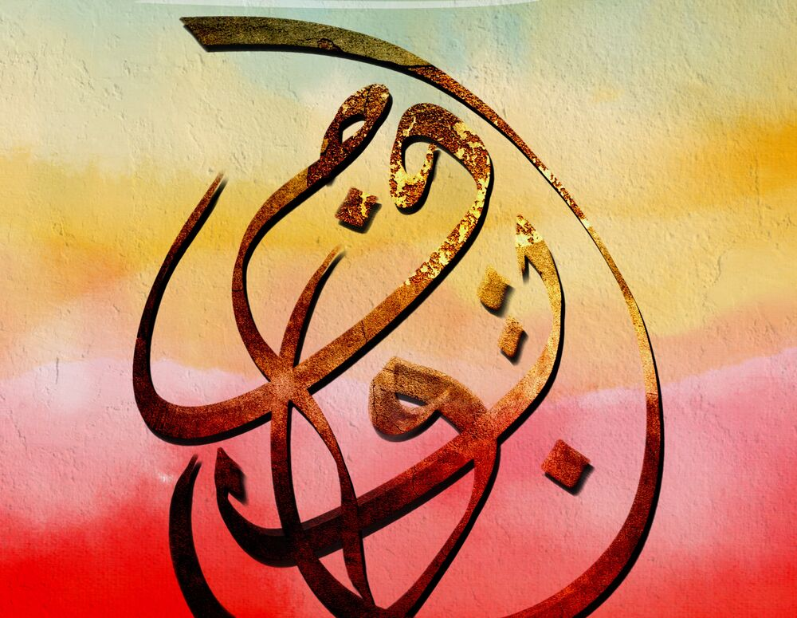
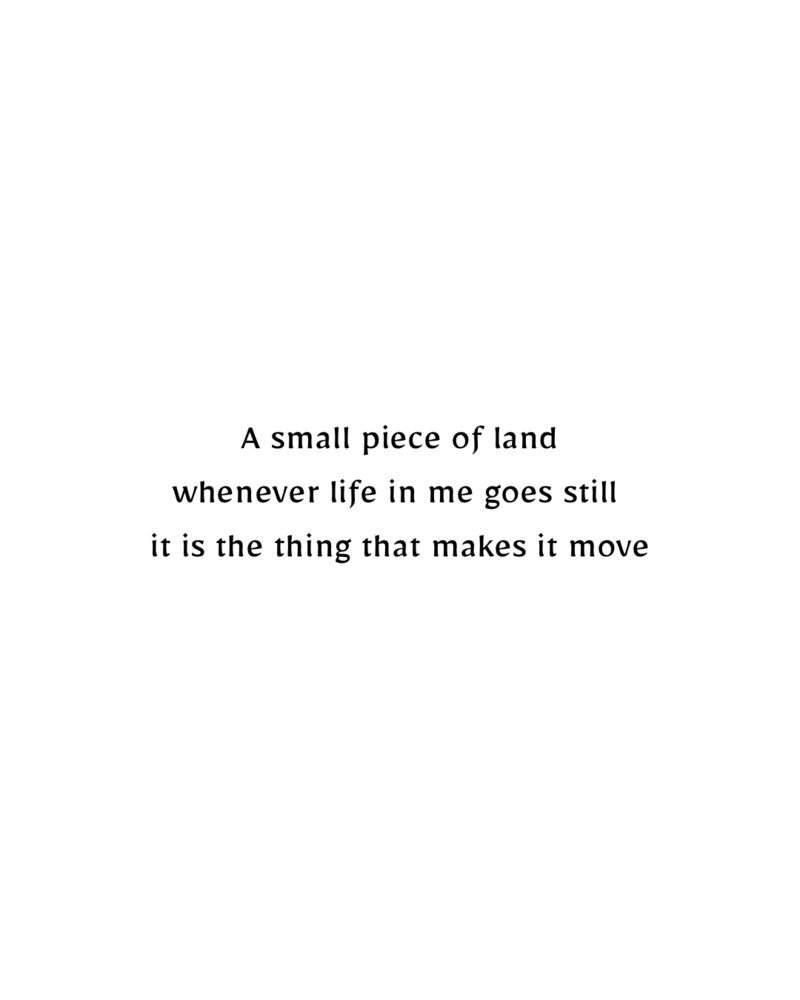
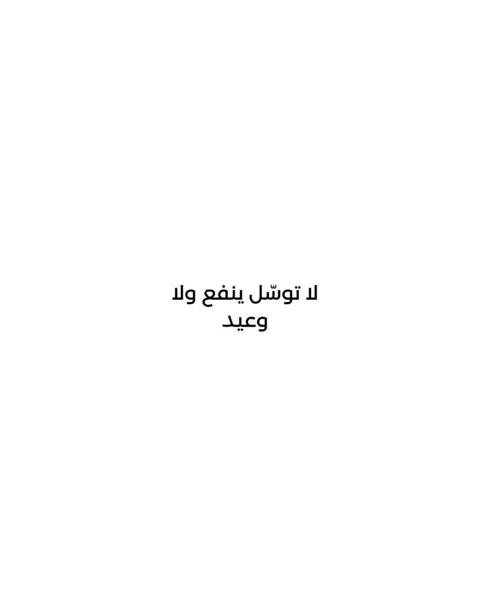

عن الفنانAbout the artist
Zein Sourany — a Lebanese poet and artist in Madrid, writing in Arabic and building what he writes into objects.

زين العابدين الصوراني
I am a Lebanese artist based in Madrid. My work lives at the intersection of language, memory and form.
I work primarily with Arabic text — not as calligraphy in the traditional sense, but as meaning. Letters treated as living material, carrying weight, silence and history.

I come to art from a life outside the studio. Years of work in complex, high-pressure environments taught me restraint, observation and the value of what is left unsaid. Creation, for me, is not escape; it is return.
I work by hand, then translate each piece into a physical object through carefully tested prints. Scale, texture and negative space matter as much as the words themselves.
التفاصيلUp close
Gold leaf, scratched grounds, ink pressed into the surface rather than laid on it. The detail is where the poem stops being a text.




ENJZ is not a persona
It is a continuation — a way to give form to ideas that insist on being made visible. Each work is produced in limited quantities, with attention to how it lives on a wall, in light, and over time.
Working together
Commissions, exhibitions, collaborations and press enquiries all reach me at the same place.
Get in touch